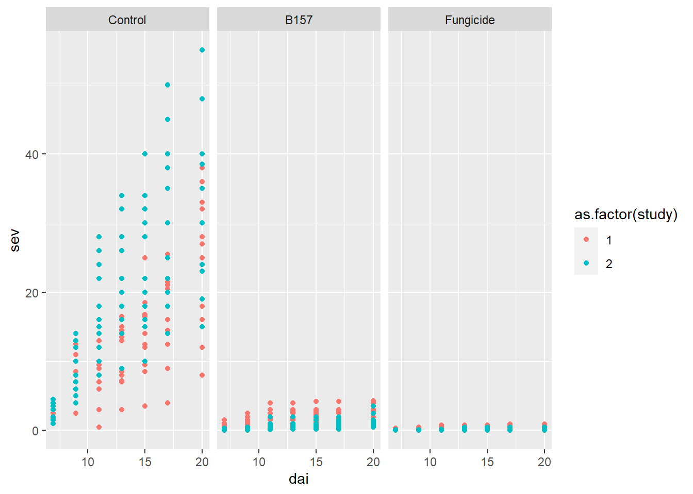
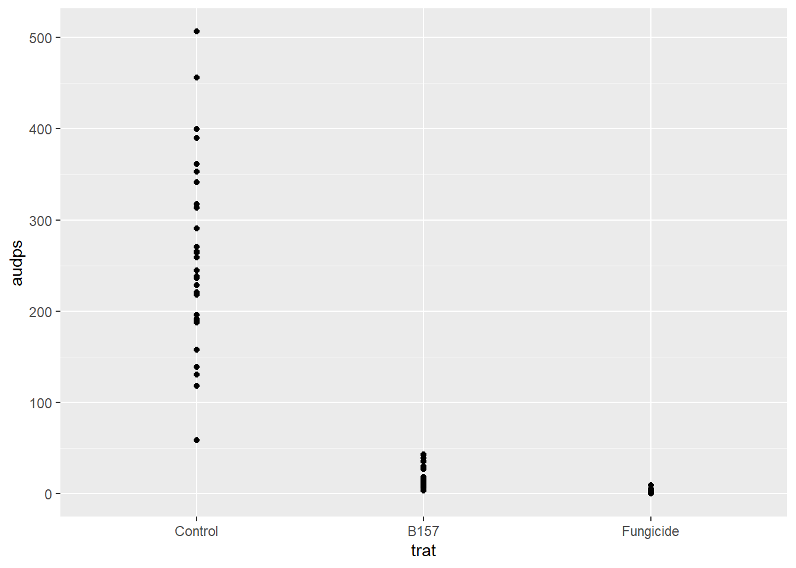
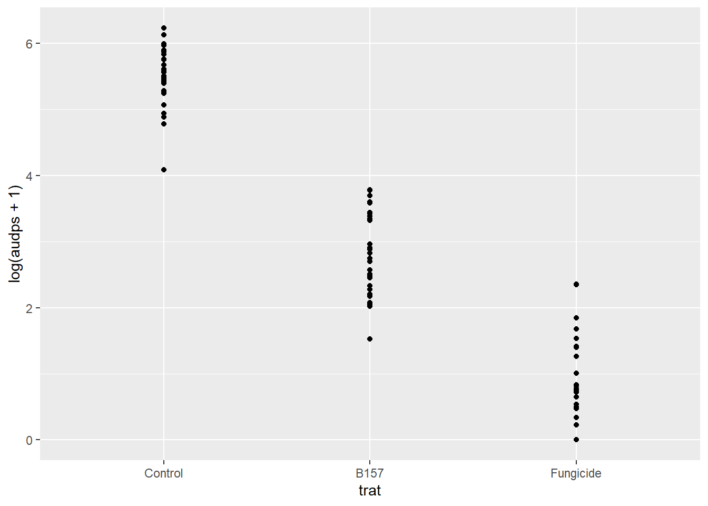
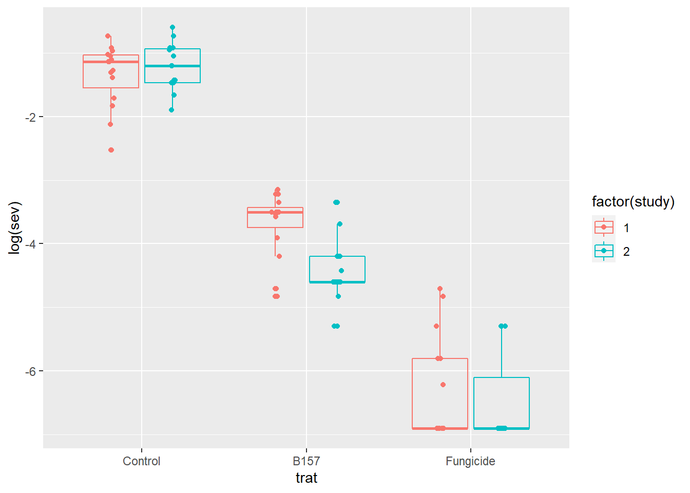
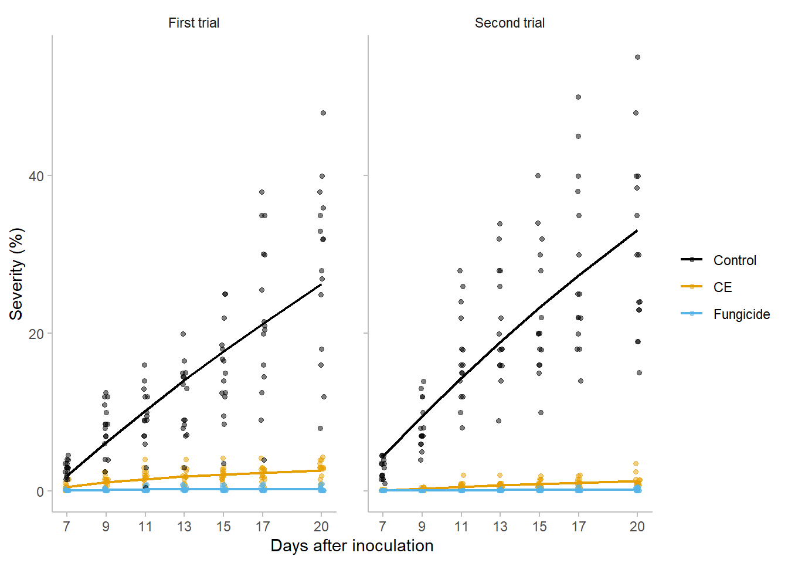
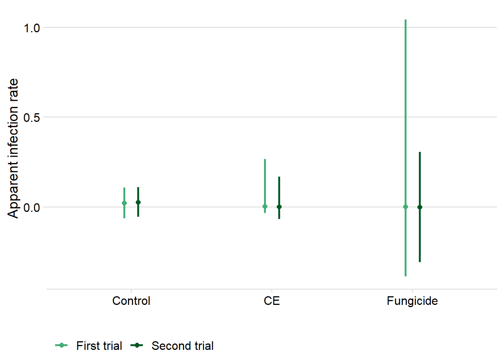
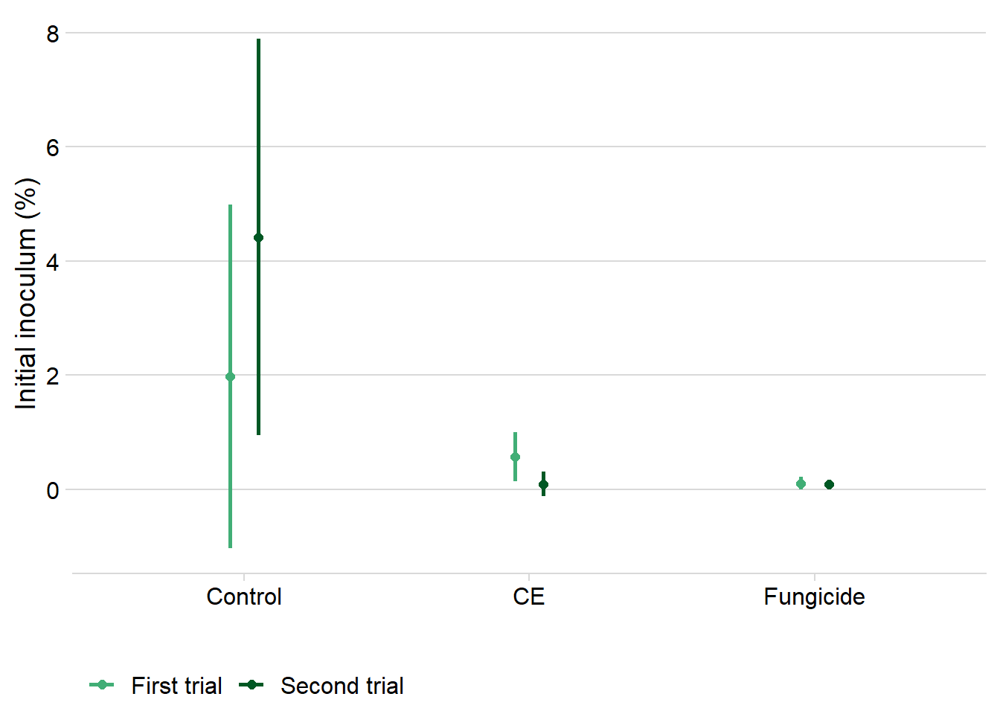

library(tidyverse)
library(gsheet)
library(ggthemes)
library(cowplot)
library(epifitter)
library(car)
library(emmeans)
library(multcomp)
library(lemon)
library(patchwork)Control efficacy
Packages
theme_kaique=theme_minimal()+
theme(panel.grid = element_blank(),
plot.title = element_text(size = 10),
axis.ticks = element_line(color = "gray"),
axis.line = element_line(color = "gray"))Load Data
data_load = gsheet2tbl("https://docs.google.com/spreadsheets/d/1wxvjxHBWDCUs4kk7TMVptFJDJl0RpKCUrNtRl3Ox7Wk/edit?usp=sharing") data = data_load %>%
#removing UCB07 treatment
filter(trat != "UCB07") %>%
# reordering treatments
mutate(trat = factor(trat, levels = c("Control", "B157", "Fungicide"))) Visualization
data %>%
ggplot(aes(dai, sev, color = as.factor(study)))+
geom_point()+
facet_wrap(~trat)
AUDPS - Area under disease progress stairs
Here we calculated the area under disease progress stair (AUDPS) using the function AUDPS() from the epifitter package.
AUDPS_data = data %>%
mutate(dai = dai-7) %>%
group_by(trat, study, rep) %>%
summarise(audps = AUDPS(time = dai,y = sev))`summarise()` has grouped output by 'trat', 'study'. You can override using the
`.groups` argument.Visualization
The comparison of the AUDPS values between treatments
AUDPS_data %>%
ggplot(aes(trat, audps))+
geom_point()
The comparison of the transformed (\(log(AUDPS+1)\)) AUDPS values between treatments.
AUDPS_data %>%
ggplot(aes(trat, log(audps+1)))+
geom_point()
Modeling AUDPS
Fisrt trial
Here we model the transformed AUDPS using a linear model.
lm_auc1 = lm(log(audps+1)~trat,data= AUDPS_data %>% filter(study ==1))
summary(lm_auc1)
Call:
lm(formula = log(audps + 1) ~ trat, data = AUDPS_data %>% filter(study ==
1))
Residuals:
Min 1Q Median 3Q Max
-1.2397 -0.3243 0.1120 0.4123 1.3720
Coefficients:
Estimate Std. Error t value Pr(>|t|)
(Intercept) 5.3243 0.1558 34.175 < 2e-16 ***
tratB157 -2.0945 0.2203 -9.506 4.98e-12 ***
tratFungicide -4.3378 0.2203 -19.688 < 2e-16 ***
---
Signif. codes: 0 '***' 0.001 '**' 0.01 '*' 0.05 '.' 0.1 ' ' 1
Residual standard error: 0.6034 on 42 degrees of freedom
Multiple R-squared: 0.9023, Adjusted R-squared: 0.8976
F-statistic: 193.9 on 2 and 42 DF, p-value: < 2.2e-16Testing the model assumptions
leveneTest(lm_auc1)Levene's Test for Homogeneity of Variance (center = median)
Df F value Pr(>F)
group 2 2.38 0.1049
42 shapiro.test(lm_auc1$residuals)
Shapiro-Wilk normality test
data: lm_auc1$residuals
W = 0.95587, p-value = 0.08498Post-hoc coparisons
We used the function cld() to compare the means obtained from the emmeans() function.
cld(
emmeans(lm_auc1, ~trat, type = "response"),
Letters = letters) trat response SE df lower.CL upper.CL .group
Fungicide 1.68 0.418 42 0.958 2.67 a
B157 24.27 3.938 42 17.456 33.61 b
Control 204.26 31.979 42 148.887 280.10 c
Confidence level used: 0.95
Intervals are back-transformed from the log(mu + 1) scale
P value adjustment: tukey method for comparing a family of 3 estimates
Tests are performed on the log scale
significance level used: alpha = 0.05
NOTE: If two or more means share the same grouping symbol,
then we cannot show them to be different.
But we also did not show them to be the same. Second trial
We repeated the same approach above to the second trial.
lm_auc2 = lm(log(audps+1)~trat,data= AUDPS_data %>% filter(study ==2))
summary(lm_auc2)
Call:
lm(formula = log(audps + 1) ~ trat, data = AUDPS_data %>% filter(study ==
2))
Residuals:
Min 1Q Median 3Q Max
-0.9003 -0.2281 -0.0320 0.2400 1.0986
Coefficients:
Estimate Std. Error t value Pr(>|t|)
(Intercept) 5.6291 0.1106 50.92 <2e-16 ***
tratB157 -3.1991 0.1563 -20.46 <2e-16 ***
tratFungicide -4.8793 0.1563 -31.21 <2e-16 ***
---
Signif. codes: 0 '***' 0.001 '**' 0.01 '*' 0.05 '.' 0.1 ' ' 1
Residual standard error: 0.4282 on 42 degrees of freedom
Multiple R-squared: 0.9599, Adjusted R-squared: 0.958
F-statistic: 502.7 on 2 and 42 DF, p-value: < 2.2e-16leveneTest(lm_auc2)Levene's Test for Homogeneity of Variance (center = median)
Df F value Pr(>F)
group 2 0.0928 0.9116
42 shapiro.test(lm_auc2$residuals)
Shapiro-Wilk normality test
data: lm_auc2$residuals
W = 0.9712, p-value = 0.3199cld(
emmeans(lm_auc2, ~trat, type = "response"),
Letters = letters) trat response SE df lower.CL upper.CL .group
Fungicide 1.12 0.234 42 0.693 1.65 a
B157 10.36 1.256 42 8.087 13.20 b
Control 277.41 30.780 42 221.736 347.00 c
Confidence level used: 0.95
Intervals are back-transformed from the log(mu + 1) scale
P value adjustment: tukey method for comparing a family of 3 estimates
Tests are performed on the log scale
significance level used: alpha = 0.05
NOTE: If two or more means share the same grouping symbol,
then we cannot show them to be different.
But we also did not show them to be the same. Control efficacy
dataf = data %>%
filter(dai == max(dai)) %>%
mutate(sev = case_when(sev==0~0.1,
sev!=0~sev),
sev = sev/100)dataf %>%
ggplot(aes(trat,log(sev), color = factor(study)))+
geom_point(width = 0.1,
position = position_jitterdodge(jitter.width = 0.1))+
geom_boxplot(fill = NA)Warning: Ignoring unknown parameters: width
Firts Trial
lm_f1 = lm(log(sev) ~trat, data = dataf %>% filter(study == 1))
summary(lm_f1)
Call:
lm(formula = log(sev) ~ trat, data = dataf %>% filter(study ==
1))
Residuals:
Min 1Q Median 3Q Max
-1.1765 -0.5851 0.1419 0.3300 1.6121
Coefficients:
Estimate Std. Error t value Pr(>|t|)
(Intercept) -1.3493 0.1624 -8.309 2.08e-10 ***
tratB157 -2.3332 0.2297 -10.160 6.98e-13 ***
tratFungicide -4.9734 0.2297 -21.656 < 2e-16 ***
---
Signif. codes: 0 '***' 0.001 '**' 0.01 '*' 0.05 '.' 0.1 ' ' 1
Residual standard error: 0.6289 on 42 degrees of freedom
Multiple R-squared: 0.9179, Adjusted R-squared: 0.914
F-statistic: 234.8 on 2 and 42 DF, p-value: < 2.2e-16cld(
emmeans(lm_f1, ~trat, type = "response"),
Letters = letters) trat response SE df lower.CL upper.CL .group
Fungicide 0.0018 0.000292 42 0.00129 0.00249 a
B157 0.0252 0.004086 42 0.01813 0.03492 b
Control 0.2594 0.042129 42 0.18694 0.36004 c
Confidence level used: 0.95
Intervals are back-transformed from the log scale
P value adjustment: tukey method for comparing a family of 3 estimates
Tests are performed on the log scale
significance level used: alpha = 0.05
NOTE: If two or more means share the same grouping symbol,
then we cannot show them to be different.
But we also did not show them to be the same. Calculating control efficacy
as.data.frame(Confint(lm_f1)) %>%
rownames_to_column(var = "coef") %>%
filter(coef != "(Intercept)") %>%
separate(coef, into = c("trash", "trat"), sep = "trat") %>%
dplyr::select(-trash) %>%
mutate(C = (1-exp(Estimate))*100,
C_upper= (1-exp(`2.5 %`))*100,
C_lower = (1-exp(`97.5 %`))*100,) trat Estimate 2.5 % 97.5 % C C_upper C_lower
1 B157 -2.333151 -2.796606 -1.869697 90.30104 93.89832 84.58296
2 Fungicide -4.973403 -5.436858 -4.509948 99.30804 99.56469 98.90010Second Trial
lm_f2 = lm(log(sev) ~trat, data = dataf %>% filter(study == 2))
summary(lm_f2)
Call:
lm(formula = log(sev) ~ trat, data = dataf %>% filter(study ==
2))
Residuals:
Min 1Q Median 3Q Max
-0.8699 -0.4292 -0.1768 0.2287 1.1803
Coefficients:
Estimate Std. Error t value Pr(>|t|)
(Intercept) -1.2393 0.1412 -8.779 4.72e-11 ***
tratB157 -3.1891 0.1996 -15.974 < 2e-16 ***
tratFungicide -5.2393 0.1996 -26.244 < 2e-16 ***
---
Signif. codes: 0 '***' 0.001 '**' 0.01 '*' 0.05 '.' 0.1 ' ' 1
Residual standard error: 0.5467 on 42 degrees of freedom
Multiple R-squared: 0.9434, Adjusted R-squared: 0.9407
F-statistic: 349.8 on 2 and 42 DF, p-value: < 2.2e-16cld(
emmeans(lm_f2, ~trat, type = "response"),
Letters = letters) trat response SE df lower.CL upper.CL .group
Fungicide 0.00154 0.000217 42 0.00116 0.00204 a
B157 0.01193 0.001685 42 0.00898 0.01587 b
Control 0.28960 0.040882 42 0.21781 0.38506 c
Confidence level used: 0.95
Intervals are back-transformed from the log scale
P value adjustment: tukey method for comparing a family of 3 estimates
Tests are performed on the log scale
significance level used: alpha = 0.05
NOTE: If two or more means share the same grouping symbol,
then we cannot show them to be different.
But we also did not show them to be the same. Calculating control efficacy
as.data.frame(Confint(lm_f2)) %>%
rownames_to_column(var = "coef") %>%
filter(coef != "(Intercept)") %>%
separate(coef, into = c("trash", "trat"), sep = "trat") %>%
dplyr::select(-trash) %>%
mutate(C = (1-exp(Estimate))*100,
C_lower = (1-exp(`97.5 %`))*100,
C_upper = (1-exp(`2.5 %`))*100) trat Estimate 2.5 % 97.5 % C C_lower C_upper
1 B157 -3.189149 -3.592041 -2.786257 95.87931 93.83485 97.2458
2 Fungicide -5.239316 -5.642208 -4.836424 99.46961 99.20646 99.6455Modelos
data_fitting = data %>%
mutate(sev= sev/100,
sev = case_when(sev==0~0.001,
sev!=0~sev),
dai = dai-7)data_fitting_c = data_fitting %>% filter(trat =="Control", study ==2)
fit_nlin2(time =data_fitting_c$dai,
y = data_fitting_c$sev)Results of fitting population models
Stats:
CCC r_squared RSE
Monomolecular 0.7559 0.6076 0.0764
Gompertz 0.7098 0.5582 0.0811
Logistic 0.6846 0.5356 0.0833
Infection rate:
Estimate Std.error Lower Upper
Monomolecular 0.10604416 0.04442216 0.017933023 0.017933023
Gompertz 0.06749616 0.05154501 -0.034743126 -0.034743126
Logistic 0.12982254 0.06058130 0.009659808 0.009659808
Initial inoculum:
Estimate Std.error Lower Upper
Monomolecular 0.02455072 0.01802192 -0.01119566 0.06029711
Gompertz 0.07501705 0.01571204 0.04385230 0.10618181
Logistic 0.08791229 0.01505306 0.05805461 0.11776997
Maximum disease intensity:
Estimate Std.error Lower Upper
Monomolecular 0.4061046 0.08835624 0.2308504 0.5813588
Gompertz 1.0000000 1.17924351 -1.3390239 3.3390239
Logistic 1.0000000 1.60504705 -2.1836032 4.1836032fit = fit_multi(time_col = "dai",
intensity_col = "sev",
data = data_fitting,
nlin = T,
starting_par = list(y0 = 0.001, r = 0.01, K = 0.5),
estimate_K = T,
strata_cols = c("trat" , "study")) fit$Parameters %>%
group_by(trat,model,best_model,study) %>%
summarise(RSE) %>%
arrange(RSE)`summarise()` has grouped output by 'trat', 'model', 'best_model'. You can
override using the `.groups` argument.# A tibble: 18 5
# Groups: trat, model, best_model [15]
trat model best_model study RSE
<chr> <chr> <int> <chr> <dbl>
1 Fungicide Logistic 1 2 0.00105
2 Fungicide Gompertz 2 2 0.00105
3 Fungicide Monomolecular 3 2 0.00105
4 Fungicide Gompertz 1 1 0.00218
5 Fungicide Monomolecular 2 1 0.00218
6 Fungicide Logistic 3 1 0.00221
7 B157 Monomolecular 1 2 0.00462
8 B157 Gompertz 2 2 0.00475
9 B157 Logistic 3 2 0.00478
10 B157 Monomolecular 1 1 0.00906
11 B157 Gompertz 2 1 0.00926
12 B157 Logistic 3 1 0.00930
13 Control Gompertz 1 1 0.0659
14 Control Logistic 2 1 0.0661
15 Control Monomolecular 3 1 0.0676
16 Control Monomolecular 1 2 0.0776
17 Control Gompertz 2 2 0.0811
18 Control Logistic 3 2 0.0833 curves = fit$Data %>%
# full_join(fit$Parameters) %>%
filter(model=="Monomolecular") %>%
mutate(trat = case_when(trat == "B157" ~ "CE",
trat != "B157" ~trat )) %>%
mutate(trat = factor(trat, levels = c("Control", "CE", "Fungicide")),
study = case_when(study == 1 ~ "First trial",
study == 2 ~ "Second trial")) %>%
ggplot()+
geom_jitter(aes(time+7,y*100, color= trat),
alpha = .5,
width = 0.1,
size = 1.2)+
geom_line(aes(time+7, predicted*100, color= trat),
size =.8)+
facet_rep_wrap(~study)+
scale_color_colorblind()+
labs(x = "Days after inoculation",
y = "Severity (%)",
color = "")+
scale_x_continuous(breaks = c(7, 9, 11, 13, 15, 17, 20))+
theme_kaique
curves
# ggsave("figs/curves.png", dpi = 600, height = 4, width = 6)
# - 7g_r = fit$Parameters %>%
filter(model == "Monomolecular") %>%
mutate(trat = case_when(trat == "B157" ~ "CE",
trat != "B157" ~trat )) %>%
mutate(trat = factor(trat, levels = c("Control", "CE", "Fungicide")),
study = case_when(study == 1 ~ "First trial",
study == 2 ~ "Second trial")) %>%
ggplot(aes(trat, r*K, color = study))+
geom_point(position = position_dodge(width = 0.2),
size = 2)+
geom_errorbar(aes(ymin = r_ci_lwr, ymax = r_ci_upr ),
width = 0,
size =1,
position = position_dodge(width = 0.2))+
# scale_color_calc()+
scale_color_manual(values= c("#41ae76","#005824"))+
labs(y = "Apparent infection rate",
x = "",
color ="")+
theme_minimal_hgrid()+
theme(legend.position = "bottom")
g_r
g_y0 =fit$Parameters %>%
filter(model == "Monomolecular") %>%
mutate(trat = case_when(trat == "B157" ~ "CE",
trat != "B157" ~trat )) %>%
mutate(trat = factor(trat, levels = c("Control", "CE", "Fungicide")),
study = case_when(study == 1 ~ "First trial",
study == 2 ~ "Second trial")) %>%
ggplot(aes(trat, y0*100, color = study))+
geom_point(position = position_dodge(width = 0.2),
size = 2)+
geom_errorbar(aes(ymin=y0_ci_lwr*100,ymax = y0_ci_upr *100),
width = 0,
size =1,
position = position_dodge(width = 0.2))+
# scale_color_calc()+
scale_color_manual(values= c("#41ae76","#005824"))+
labs(y = "Initial inoculum (%)",
x = "",
color = "")+
theme_minimal_hgrid()+
theme(legend.position = "bottom")
g_y0
Combo parameters
curves /( g_r + g_y0)+
plot_layout(guides = "collect",
nrow = 2)+
plot_annotation(tag_levels = "A")&
theme_kaique
# theme(legend.position = "bottom")
ggsave(".figs/curve_parameters.png", dpi = 600, height = 5, width = 7, bg = "white")